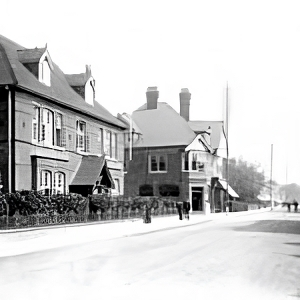

Act 5 Scene 1
In 1979, Horley Central Players Ltd. signed an agreement with British Rail for a 12 year lease on the premises.
The rent was £1,450 per annum, subject to an increase every 3 years. Barts Players by this time were firmly established as a fellow Company also performing at the Archway Theatre, each Company performing 5 productions a year “underneath the Arches”.
However, Barts Players had no direct responsibility for the lease, rent and maintenance of the premises. Barts Players paid a fee to Horley Central Players for the use of the Theatre for a production. They did, however, have their own Arch for rehearsals and meetings for which they paid a rent to Horley Central Players Ltd.
This Arch was known as “Barts Arch” and still is to this day for some of us oldies. This is still the Arch used for Company rehearsals.
In 1980, discussions took place between the two Companies as to how best use could be made of the Arches forming the Theatre complex, for the benefit of both Companies.
After many meetings and much discussion (!) it was decided that Horley Central Players Ltd. would change its name to Archway Theatre Company Ltd. This would comprise two divisions, Horley Central Players and Barts Players. The new Archway Theatre Company Council was made up of Chairman, Treasurer, Secretary and four members from each of Barts Players and Horley Central Players. The divisions would still each have their own Chairman, Treasurer, Secretary and Committee to be responsible for their own productions.
This arrangement continued amicably for several years, but the benefits of a single Company with single membership started to be discussed.
Written by Bette Bunkell – 2002